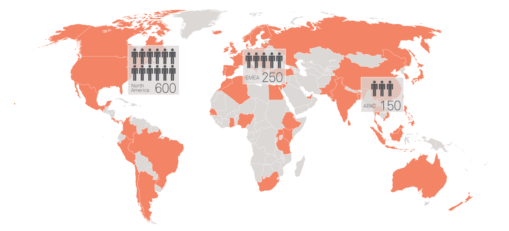

Global Provider
Spanning the world
With services in 72 countries as of 2014, Pontoon is the largest and most diversified global talent acquisition solutions management provider in the industry, with unrivaled footprint and ability to effectively scale programs to a global platform. Our solutions are built on global governance over regional delivery functions. This allows us to support geographic requirements and cultural preferences from regional and in-country offices under a unified governance structure, driving the consistency of process that multi-region solutions demand.
We are the exclusive global contingent and permanent talent management provider, and the only organization who supports the end-to-end process in-house without outsourcing. With support from our parent company, yet operating independently, we are able to deliver solutions with high agility and quick response to regional changes to ensure we remain compliant with local policies. Our commitment to corporate communication and training on employment practices and legislation ensures that each and every employee is kept abreast of changes on a continuing basis.
- Pontoon provides MSP services for 60+ clients spanning 72 countries and territories across the globe.
-
We have Shared Services locations in North America, EMEA and APAC and operate a best-in-class 24x7 Customer Support Center providing 1st/2nd tier support to clients and suppliers.
With a team that covers the globe, Pontoon provides extensive support relative to local languages, laws, cultures and time differences. For new geographies and countries where we have not yet implemented a solution, we have a proven methodology and capacity to expand in accordance with country specific delivery labor laws and change management needs. For additional information, review Operating as a Global Provider (PDF).
Countries and Territories
| Americas | ||||
| United States | Canada | Argentina | Brazil | Chile |
| Columbia | Costa Rica | Mexico | Panama | Peru |
| APAC | ||||
| Australia | Bangladesh | China | Hong Kong | India |
| Indonesia | Japan | Malaysia | New Zealand | Pakistan |
| Philippines | Singapore | Sri Lanka | South Korea | Taiwan |
| Thailand | Vietnam |
| EMEA | ||||
| Algeria | Austria | Belgium | Bosnia/Herzegovina | Bulgaria |
| Croatia | Czech Republic | Denmark | Egypt | Ethiopia |
| Finland | France | Germany | Ghana | Great Britain |
| Greece | Hungary | Iceland | Ireland | Israel |
| Italy | Jordan | Kenya | Latvia | Lebanon |
| Lithuania | Luxembourg | Morocco | Netherlands | Nigeria |
| Norway | Poland | Portugal | Romania | Russia |
| Senegal | Serbia | Slovakia | Slovenia | South Africa |
| Spain | Sweden | Switzerland | Tanzania | Turkey |
| UAE | Uganda |